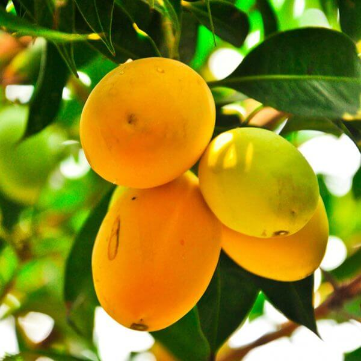
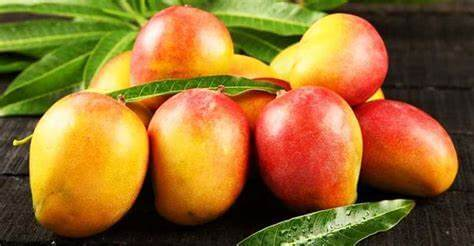
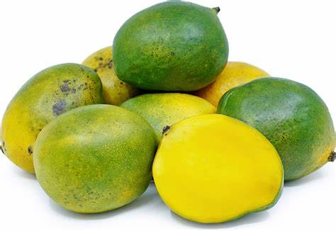
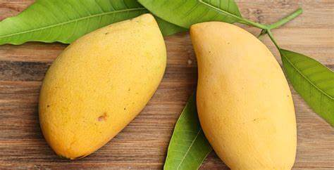

-
Alphonso (Hapus):
-

Season: Spring to early summer (March to June)
Region: Mainly grown in Western India, particularly in Maharashtra and Gujarat.
-
Haden:
-

Season: Late spring to early summer (May to July)
Region: Widely cultivated in Florida, USA.
-
Keitt:
-

Season: Late summer to early fall (July to September)
Region: Grown in various tropical and subtropical regions, including the United States and Mexico.
-
Nam Dok Mai:
-

Season: Late spring to early summer (May to July)
Region: Cultivated in Thailand.